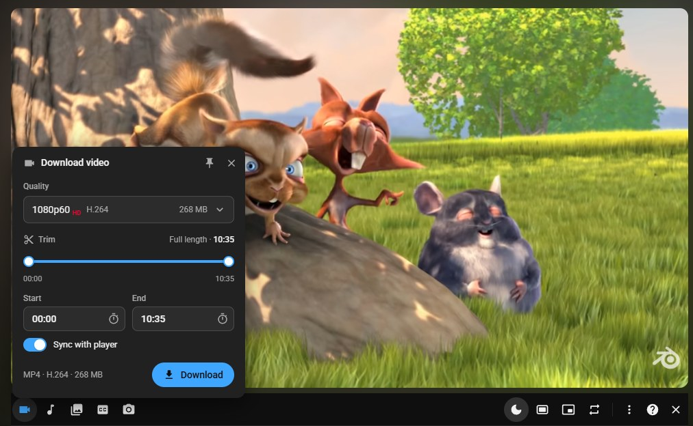
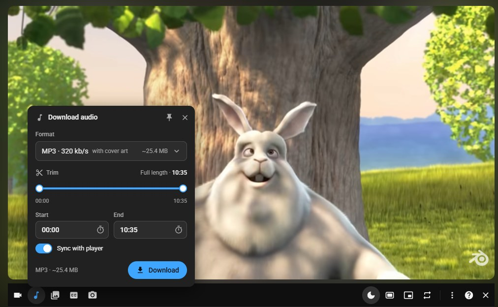
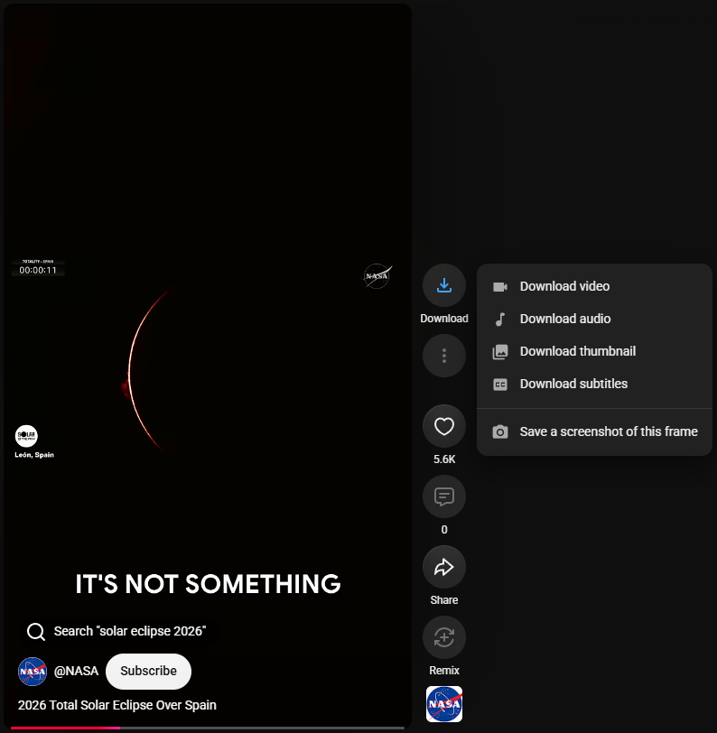
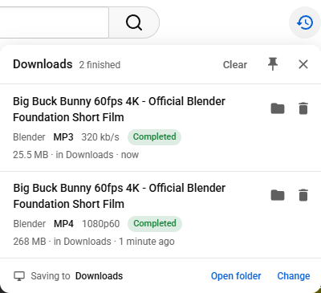

Features
YouTube videos up to 4K
Pick any quality YouTube offers, from 144p to 2160p, including 60 fps.
YouTube to MP3
Save just the audio as MP3 with cover art, or as M4A, Opus or WAV.
YouTube Shorts downloader
Every Short gets a Download button beside it.
Clips
Set a start and end time to download only the part you need.
Thumbnails, subtitles, screenshots
Save a video's preview picture, its subtitles, or the frame you are watching.
Fast and reliable
The Windows app downloads in several parts at once, keeps going when you close the tab, and resumes after a restart.
Age-restricted and members-only videos
If your YouTube account may watch a video, the app can download it too.
Your video comes first
Downloads slow down for a moment when the video you are watching needs the connection.
Easy to update or remove
Open the installer again to update, repair or uninstall. It follows Windows' light or dark mode.
10 languages
English, German, Spanish, French, Italian, Portuguese, Polish, Russian, Japanese and Chinese.
See it in action

Download a video in the quality you want
Click the camera button under any video, pick a quality from 144p up to 4K and click Download. Drag the two dots under Trim to keep only a part of it.

Turn any video into an MP3
The music note button saves just the sound: MP3 up to 320 kb/s with the video's picture as cover art, or M4A, Opus or WAV.

Download Shorts
Every Short gets a Download button beside it, with the same choices: the video, the sound, the thumbnail, the subtitles or a screenshot.

All your downloads in one place
A clock button in YouTube's top bar shows what is downloading, what is done and where it was saved. One click opens the folder.
How to install
- Download YTDownloadManager-Setup-x64.exe (or the 32-bit version) and open it.
- If Windows says "Windows protected your PC", click More info, then Run anyway.
- Click Install, then Open.
- In the app, click Add to browser. On the extensions page, turn on Developer mode, click Load unpacked, paste the copied folder path and click Select Folder.
- Open a YouTube video. The download toolbar appears under it.
Step-by-step pictures, updating and uninstalling are explained in the full guide.
Frequently asked questions
Is YT Download Manager free?
Yes. It is free and open source under the MIT License, with no ads, no accounts and no tracking.
Can it download YouTube videos in 4K?
Yes. You can pick any quality YouTube offers for a video, from 144p up to 2160p (4K), including 60 fps.
Can it convert YouTube to MP3?
Yes. Save just the audio as MP3 (up to 320 kb/s, with the video's picture as cover art), M4A, Opus or WAV.
Can it download YouTube Shorts?
Yes. Every Short gets a Download button beside it, with the same choices as normal videos.
Where are the downloaded files saved?
In your Downloads folder, unless you pick another folder in the app.
Why does Windows say "Windows protected your PC"?
Windows shows this for new apps that are not signed with a paid certificate. Click More info, then Run anyway. The checksums of every file are published with each release.
More answers and fixes for common problems are in the FAQ and troubleshooting sections.
Support the project
This project is free and made in my spare time. If it saves you time, you can support it with a donation.